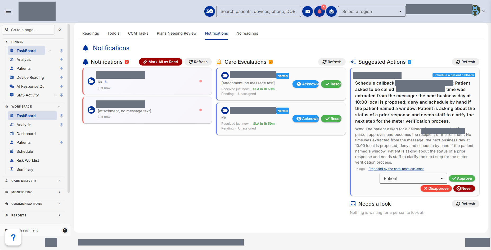

When Patients Started Talking, the Data Told a Different Story
Sometimes, the most valuable thing technology can do is help people understand and support each other.
During our first healthcare AI pilot, something interesting happened. Patients who had never responded to routine messages began communicating. At the same time, we noticed something unexpected: increased conversations didn't always translate into increased monitoring activity.
Working alongside our partners at RemoteCares (RCS), we introduced an AI companion powered by Kestrel's sovereign AI architecture to help patients stay connected with their care teams between appointments.
In our first full-month evaluation of 46 patients, message response rates increased from 8% to 25%, while the percentage of patients responding at least once grew from 52% to 65%. Nine patients who had never previously responded began communicating.
The numbers were encouraging, but the conversations revealed something even more valuable.
Understanding the story behind the data
In remote patient monitoring, patients regularly submit health readings from home. When those readings decline, it's easy to interpret the change as disengagement. But our pilot showed us that the reality can be more complicated.
Some patients were communicating more frequently even as their monitoring activity decreased. Through those conversations, we learned about equipment problems, missing supplies, hospitalizations, and other interruptions that monitoring dashboards alone couldn't explain.
We began to recognize that meaningful patient engagement isn't simply about collecting more data. It's about maintaining a connection that helps care teams understand the person behind it.
Kestrel's sovereign architecture provides the foundation for that continuity. In practice, that's what let a patient's passing mention of a problem in one conversation still be there weeks later — and what turned scattered individual comments about supplies and equipment into a pattern the care team could act on. Its persistent memory allows relevant context to carry across conversations, while its governance framework establishes boundaries for AI behavior and human oversight. Rather than treating each interaction as an isolated exchange, the technology is designed to support an ongoing relationship without sacrificing accountability or control.
Supporting the people behind the care
As patients became more engaged, we recognized another opportunity. More conversations meant more information for healthcare professionals to review, and those professionals were already managing demanding workloads.
We began exploring how the same intelligence supporting patients could also help care teams understand what needed attention and identify appropriate next steps.
That realization inspired the next evolution of our approach:
One AI. A companion for the person it's caring for. A copilot for the person caring for them.
We built a care team assistant that is now being used in our pilot environment. It can recognize situations requiring attention, bring relevant context forward, and recommend actions such as scheduling a callback or following up on missing monitoring supplies.

Importantly, healthcare professionals review and approve proposed actions before they are carried out. The AI helps connect information with potential next steps, while human judgment remains at the center of care.
What started as an effort to improve patient communication has evolved into an approach designed to support both sides of the care relationship.
What we're taking away
Our results are early and observational, rather than findings from a controlled clinical trial. We're continuing to measure, learn, and refine our approach alongside RemoteCares.
But this experience has reinforced something fundamental to Kestrel's vision: sovereignty, persistent memory, and responsible governance aren't simply technical features. They're capabilities that help make AI more useful, accountable, and adaptable to real human needs.
We started this journey hoping to help patients stay engaged. Along the way, we discovered an opportunity to better support the people caring for them.
And perhaps that's our most important lesson so far: the greatest potential of AI isn't simply in what it can do for us, but in what it can help us do for each other.